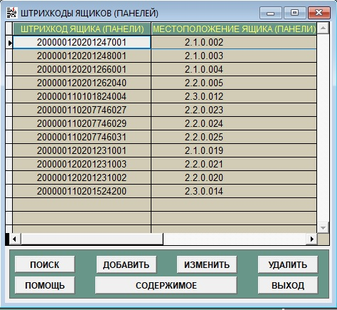
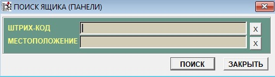
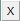
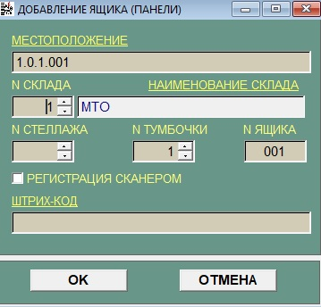
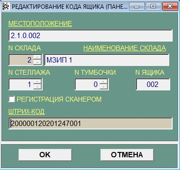
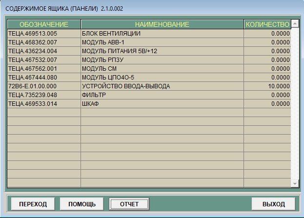

Подсистема "Коды ящиков"
В конец документа
В подсистеме "Коды ящиков" предоставлена возможность добавления, удаления и корректировки спиcка ящиков(панелей), просмотра спиcка содержимого ящика(панели).Внешний вид окна представлен на рисунке 1.

Рисунок 1 - Окно подсистемы коды ящиков
Назначение кнопок:
-
Кнопка "Поиск" - позволяет найти необходимый ящик(панель)для удаления, редактирования или просмотра содержимого. При нажатии этой
кнопки станет активным окно поиск, представленного на рисунке 2.

Рисунок 2 - Поиск ящика
- Поле "Штрих-код" - штриховой код элемента. Только целые числа.
- Поле "Местоположение" - местоположение элемента в формате с.с.т.щщщ.яяя. Только цифры и '.', смотри пункт 3.5(Подсистема "ЗИП").
- Кнопки  предназначены для очищения поля ввода и установки курсора в данном поле.
- Кнопка"Поиск" - поиск элемента по заданным полям.
- Кнопка"Закрыть" - закрывается окно поиска и открывается окно подсистемы "Коды ящиков".
-
Кнопка"Добавить" - позволяет добавить новый элемент в базу данных. При нажатии откроется окно смотри рисунок 3.

Рисунок 3 - Добавление ящика.
- "Mестоположение" - местоположение элемента в формате с.с.т.щщщ.яяя. Только цифры и '.', смотри пункт 3.3(Подсистема "ЗИП").
- "№склада" - номер склада где хранится элемент. Только целые числа.
- "Наименование склада" - имя склада где хранится элемент.
- "№стеллажа" - номер стеллажа где хранится элемент. Только целые числа.
- "№тумбочки" - номер тумбочки где хранится элемент. Только целые числа.
- "№ящика" - номер ящика где хранится элемент. Только целые числа.
-
. Данная опция осуществляет проверку введенного штрих-кода в справочнике. Если включена, то проверка производится при считывании штрих-кода терминалом. Если выключена, то при нажатии кнопки
"Ок".
- "Штрих-код" - штриховой код элемента. Только целые числа.
- Кнопка"Отмена"Закрывает окно добавление ящика и возвращает в подсистему "Коды ящиков".
-
Кнопка"Изменить" позволяет редактировать информацию об ящике(панели), смотри рисунок 4.

Рисунок 4 - Изменение ящика.
- "Mестоположение" - местоположение элемента в формате с.с.т.щщщ.яяя. Только цифры и '.', смотри пункт 3.3(Подсистема "ЗИП").
- "№склада" - номер склада где хранится элемент. Только целые числа.
- "Наименование склада" - имя склада где хранится элемент.
- "№стеллажа" - номер стеллажа где хранится элемент. Только целые числа.
- "№тумбочки" - номер тумбочки где хранится элемент. Только целые числа.
- "№ящика" - номер ящика где хранится элемент. Только целые числа.
-
. Данная опция осуществляет проверку введенного штрих-кода в справочнике. Если включена, то проверка производится при считывании штрих-кода терминалом. Если выключена, то при нажатии кнопки
"Ок".
- "Штрих-код" - штриховой код элемента. Только целые числа.
- Кнопка"Отмена"Закрывает окно добавление ящика и возвращает в подсистему "Коды ящиков".
- Кнопка"Удалить" позволяет удалить ящик(панель) из списка.
- Кнопка"Помощь" - позволяет открыть справку.
-
Кнопка"Содержимое" - раскрывает список содержимого ящика(панели) смотри рисунок 5

Рисунок 5 - Содержимое ящика
-
Кнопка "Переход". При нажатии на данную кнопку, осуществляется переход в подсистему "ЗИП", где можно увидеть полную информацию об выбранном элементе.
- Кнопка"Помощь" - позволяет открыть справку.
- Кнопка"Отчет" - позволяет отправить на печать список содержимого ящика(панели).
- Кнопка"Выход" - осуществляет выход из окна содержимое ящика(панели) в подсистему "Коды ящиков".
- Кнопка"Выход" - осуществляет выход из окна подсистемы "Коды ящиков".